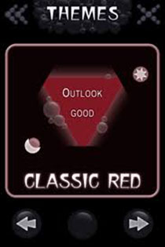
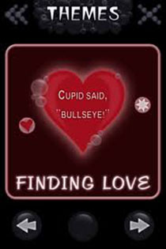
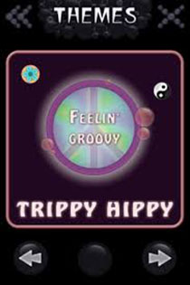
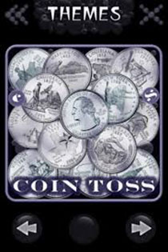

Mystic
Concentrate... ask a question... and watch in amazement as answers to your most challenging questions about life are revealed through what appears to be a mysterious liquid.
Concentrate... ask a question... and watch in amazement as answers to your most challenging questions about life are revealed through what appears to be a mysterious liquid.
Mystic was designed to be a highly immersive application. The answers, particles, and bubbles float around and generally behave as expected using an advanced physics engine. Although shaking is supported, the more dramatic way to reveal a new answer is to turn it face down, concentrate on a question, and then turn it face up again.

Classic answers that we all know and love! If you have seen a Magic Eight Ball then you should know what to expect from this theme. Available in your choice of color (Red, Green, or Blue).

A charming heart based theme with answers that try to help you navigate the complexities of relationships and dating.

Psychedelic colors with answers inspired by the hippy culture of the 60s and 70s. This theme is a lot of fun at parties… or for anyone with a little leftover Flower Power.

Realistic U.S. quarters (coins) afloat in the Mystic waters! All fifty states are included. Heads and tails are equally represented for a true 50% chance of heads versus tails.